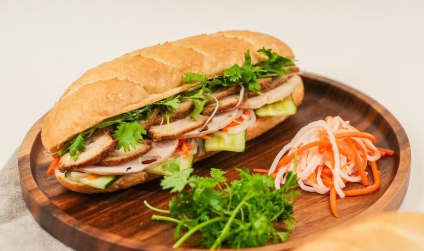
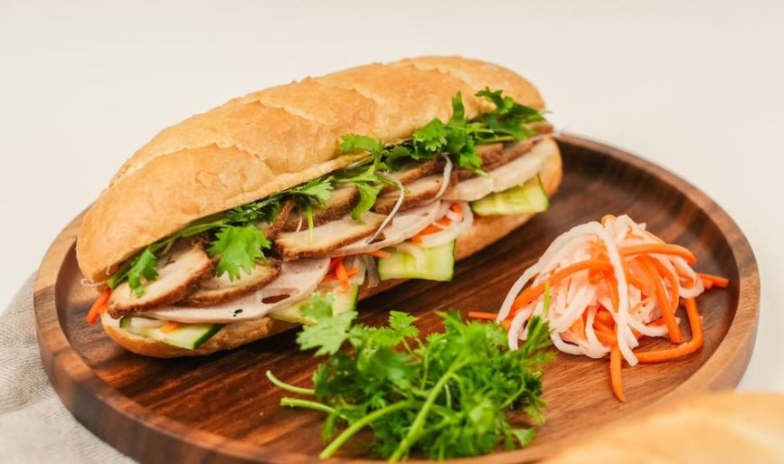

こんにちは、ベトナム人として、このホームページを通じて、ベトナム料理をご紹介したいと思っています。
食事に行く前に何にしようかなと悩んでいる皆さんが少なくありません。その店がどんなメニューか、値段が高いか、雰囲気が良いかという考えは絶対あるとも思います。
そのため、東京でベトナム料理を体験した写真を撮って、このホームページを作りました。是非、ご覧ください。
ベトナム料理の中でフォーが代表的だといっても過言ではありません。フォー はベトナムの国民食として有名な麺料理の一つです。ベトナム料理を食べたことがない方はまずフォーを食べたほうが良いと思います。フォーのスープは牛肉やスパイスから作られており、強い香りがします。中には、平たい米粉麺、牛肉または鶏肉、少量の野菜が入っています。スープはさっぱりとした味わいで、ベトナム料理を食べたことがない方にも食べやすく、おすすめです。
もし、さっぱりの味が好きじゃなかったら、二番目のおすすめはブンボーフェです。スープはフォーよりも濃い味わいになります。中には米粉麺、牛肉、野菜が入っています。豚骨やみそラーメンなど味が濃いスープが好きな方は食べてみてください。
それでも物足りない場合には、もっとベトナム料理をチャレンジしたい方は「バインミ」を食べればどうでしょうか。バインミとはベトナムのサンドイッチです。日本のサンドイッチ同様にベトナムのパンに色々な食材を挟みます。
 

上記の料理は日本のベトナムのお店でも販売している人気の3種類をご紹介いたしました。ぜひ、試してみてください。
日本に住んでいるベトナム人の留学生より。